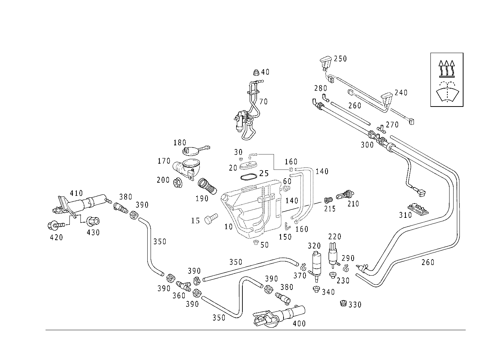

| № | Артикул | Название | Кол. | Примечание | Ограничение |
|---|---|---|---|---|---|
| 10 | A 170 869 03 20 | Бак (BEHAELTER) | 1 | СТЕКЛООМЫВАТЕЛЬ ЛОБОВОГО СТЕКЛА | |
| 15 | N 304017 006016 | Винт с 6-гранной головкой (SECHSKANTSCHRAUBE) | 1 | КРЕПЛЕНИЕ БАЧКА; M6X16 | |
| 20 | A 170 869 03 08 | Крышка (ABDECKUNG) | 1 | БАЧОК СТЕКЛООМЫВАТ.ЛОБ.СТЕКЛА | |
| 25 | A 231 997 00 45 | Уплотнительное кольцо (DICHTRING) | 1 | ||
| 30 | A 116 987 00 44 | Диск (SCHEIBE) | 2 | БАЧОК СТЕКЛООМЫВАТ.ЛОБ.СТЕКЛА | -875 |
| 40 | A 010 997 13 81 | втулка (TUELLE) | 2 | СТЕКЛООЧИСТ. ЛОБ.СТЕКЛА С ОБОГРЕВ. | 875 |
| 50 | A 009 997 61 81 | втулка (TUELLE) | 1 | БАЧОК НА КОЛЕСН. АРКЕ | |
| 60 | A 009 997 62 81 | втулка (TUELLE) | 1 | БАЧОК НА КОЛЕСН. АРКЕ | |
| 70 | A 170 830 06 61 | Нагревательный прибор (HEIZGERAET) | 1 | 875 | |
| 140 | A 170 832 31 94 | Шланг (SCHLAUCH) | 2 | БАЧОК СТЕКЛООМЫВАТ.ЛОБ.СТЕКЛА | 875 |
| 150 | A 170 832 00 15 | Трубопровод (ROHRLEITUNG) | 2 | БАЧОК СТЕКЛООМЫВАТ.ЛОБ.СТЕКЛА | 875 |
| 160 | A 003 997 87 90 | Хомут для шланга (SCHLAUCHSCHELLE) | 4 | БАЧОК СТЕКЛООМЫВАТ.ЛОБ.СТЕКЛА; 13.5 MM | 875 |
| 170 | A 170 869 03 17 | Трубопровод (ROHRLEITUNG) | 1 | [402] БОЛЬШЕ НЕ ПОСТАВЛЯЕТСЯ | |
| 180 | A 230 869 01 08 | Крышка (ABDECKUNG) | 1 | ЗАПРАВ. ПАТРУБОК | |
| 190 | A 170 869 02 17 | Трубопровод (ROHRLEITUNG) | 1 | ||
| 200 | A 003 990 02 51 | Шестигранная гайка (SECHSKANTMUTTER) | 1 | ЗАЛИВН. ШТУЦЕР НА БАЧКЕ | |
| 210 | A 220 540 00 45 | Переключатель (SCHALTER) | 1 | УРОВЕНЬ СТЕКЛООМЫВ. ЖИДКОСТИ | |
| 215 | A 220 997 19 81 | - втулка (TUELLE) | 1 | УРОВЕНЬ СТЕКЛООМЫВ. ЖИДКОСТИ | |
| 220 | A 210 869 08 21 | Насос (PUMPE) | 1 | СТЕКЛООМЫВАТЕЛЬ ЛОБОВОГО СТЕКЛА | |
| 220 | A 210 869 09 21 | НАСОС | 1 | СТЕКЛООМЫВАТЕЛЬ ЛОБОВОГО СТЕКЛА | |
| 230 | A 123 997 36 81 | втулка (TUELLE) | 1 | НАСОСА СТЕКЛООМЫВ. В БАЧКЕ | |
| 240 | A 170 860 17 47 | - Форсунка стеклоомывателя (DUESE SCHEIBENWASCHANLAGE) | 1 | СЛЕВА Рулевое управление: Влево | |
| 240 | A 170 860 18 47 | - Форсунка стеклоомывателя (DUESE SCHEIBENWASCHANLAGE) | 1 | СЛЕВА Рулевое управление: Вправо | |
| 250 | A 170 860 17 47 | - Форсунка стеклоомывателя (DUESE SCHEIBENWASCHANLAGE) | 1 | СПРАВА Рулевое управление: Вправо | |
| 250 | A 170 860 18 47 | - Форсунка стеклоомывателя (DUESE SCHEIBENWASCHANLAGE) | 1 | СПРАВА Рулевое управление: Влево | |
| 260 | A 010 997 89 82 | Шланг (SCHLAUCH) | NB | ОМЫВАТЕЛЬ СТЕКЛА; 4.6X1.8 MM [404] ЗАКАЗЫВАТЬ ПОГОННЫМИ МЕТРАМИ | |
| 270 | A 140 869 00 24 | СОЕДИНИТЕЛЬ (ANSCHLUSSTUECK) | 1 | ФОРСУНКА | |
| 280 | A 201 869 00 24 | Угловой штуцер (WINKELSTUECK) | 1 | ФОРСУНКА | |
| 290 | A 000 995 59 65 | хомут (SCHELLE) | 1 | ШЛАНГ К НАСОСУ | |
| 300 | A 170 860 10 92 | Шланг (SCHLAUCH) | 1 | СТЕКЛООЧИСТ. ЛОБ.СТЕКЛА С ОБОГРЕВ. Рулевое управление: Влево [402] БОЛЬШЕ НЕ ПОСТАВЛЯЕТСЯ | 875 |
| 300 | A 170 860 12 92 | Шланг | 1 | СТЕКЛООЧИСТ. ЛОБ.СТЕКЛА С ОБОГРЕВ. Рулевое управление: Вправо [402] БОЛЬШЕ НЕ ПОСТАВЛЯЕТСЯ | 875 |
| 310 | A 126 820 11 11 | Пластина (PLATTE) | 1 | КОНТАКТН. ПЛАСТИНА | 875 |
| 320 | A 210 869 11 21 | Насос (PUMPE) | 1 | ФАРООЧИСТИТЕЛЬ | 600 |
| 330 | A 210 987 00 45 | Пробка (VERSCHLUSSSTOPFEN) | 1 | ЗАМКОВ. ОТВЕРСТИЕ ФАРООЧИСТ. В БАЧКЕ ОМЫВ. ЖИДКОСТИ; 19 MM | -600 |
| 340 | A 010 997 11 81 | втулка (TUELLE) | 1 | НАСОС ФАРООМЫВАТ. В БАЧКЕ | 600 |
| 350 | A 170 869 00 94 | Шланг (SCHLAUCH) | 1 | Т\-ОБР.ЭЛЕМ. К РАСПЫЛИТ. СЛЕВА 1300 MM [409] ПРИ МОНТАЖЕ ПОДОГНАТЬ ПО МЕСТУ | 600 |
| 350 | A 170 869 00 94 | Шланг (SCHLAUCH) | 1 | Т\-ОБР.ЭЛЕМ. К РАСПЫЛИТ. СПРАВА 240 MM [409] ПРИ МОНТАЖЕ ПОДОГНАТЬ ПО МЕСТУ | 600 |
| 360 | A 000 869 12 22 | Распределитель (VERTEILER) | 1 | 600 | |
| 370 | A 000 995 82 65 | хомут (SCHELLE) | 1 | ШЛАНГ К НАСОСУ | 600 |
| 380 | A 210 869 02 24 | Сцепление, механическое (KUPPLUNG, MECHANISCH) | 2 | ШЛАНГ | 600 |
| 390 | A 005 997 49 90 | Хомут для шланга (SCHLAUCHSCHELLE) | 5 | ШЛАНГ | 600 |
| 400 | A 170 860 01 47 | Жиклер (HUBDUESE) | 1 | СЛЕВА | 600 |
| 410 | A 170 860 02 47 | Жиклер (HUBDUESE) | 1 | СПРАВА | 600 |
| 420 | N 304017 006016 | Винт с 6-гранной головкой (SECHSKANTSCHRAUBE) | 4 | ФОРСУНКА; M6X16 | 600 |
| 430 | A 000 984 41 21 | Заклепочная гайка (EINNIETMUTTER) | 4 | ФОРСУНКА M6; M6 | 600 |
Позиций: 45 · подписано на схемах: 45 · колесо — плавный зум в курсор, перетаскивание — пан, двойной клик — зум, клик по артикулу — скопировать.